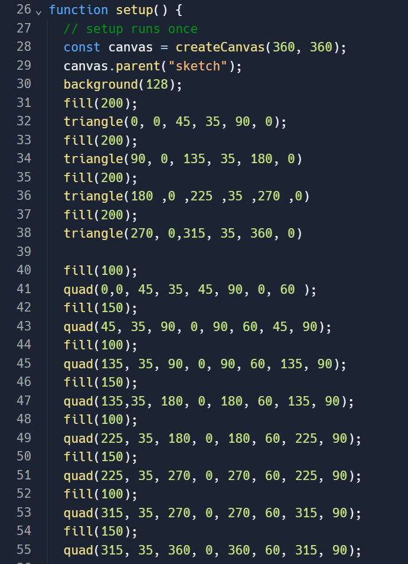
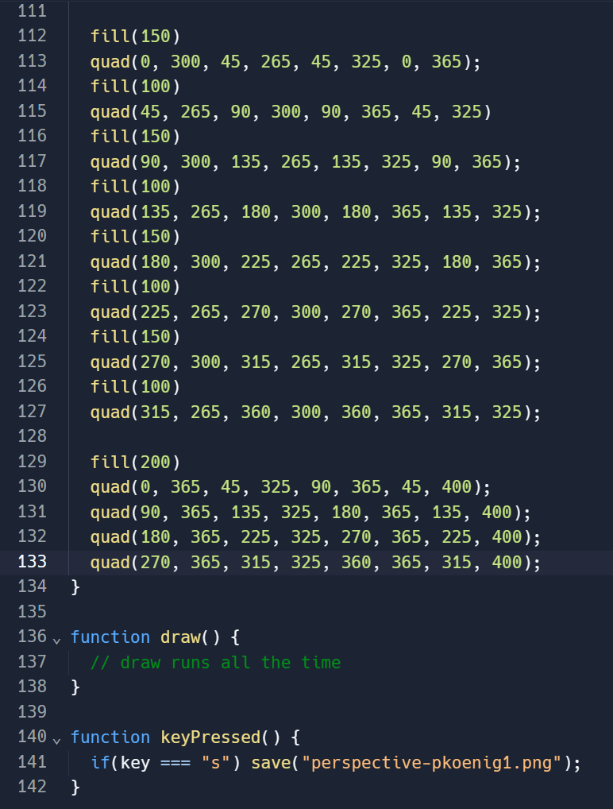

Dieses Beispiel zeigt, wie ich in p5.js eine einfache perspektivische Zeichnung erstellt habe. Das Canvas hat eine Größe von 360x400 Pixeln, um ausreichend Platz für die Zeichnung zu bieten. Die setup-Funktion wird einmalig ausgeführt, wenn das Sketch erstellt wird. Zuerst habe ich ein Canvas mit den angegebenen Dimensionen erstellt und dann mit dem HTML-Element "sketch" verbunden. Den Hintergrund habe ich grau eingefärbt, um die Zeichnung klarer sichtbar zu machen. Anschließend werden Dreiecke und Vierecke gezeichnet, die zusammen eine perspektivische Struktur bilden.
Für eine bessere Organisation des Codes wurden die Zeichnungen in separate Funktionen ausgelagert. Die drawTriangles()-Funktion zeichnet die dreieckigen Elemente der perspektivischen Struktur, wobei jedes Dreieck mit drei Koordinatenpunkten definiert wird, die die Eckpunkte des Dreiecks darstellen. Die drawQuads()-Funktion zeichnet die viereckigen Elemente der perspektivischen Struktur, wobei jedes Viereck mit vier Koordinatenpunkten definiert wird, die die Eckpunkte des Vierecks darstellen.
Dieser Code dient nur zu Demonstrationszwecken und kann nach Bedarf erweitert und angepasst werden, um verschiedene perspektivische Effekte zu erzielen.